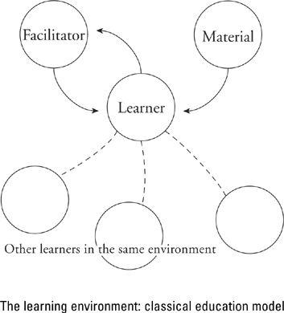

Classical Model of the Learning Process
Educators tell us that the learning process consists of four elements: learner, facilitator (sorry about the teacherspeak), material, and co-learner(s). The model looks something like this:

Clearly, some learning can happen in the absence of one or more of these elements. Think of yourself alone with that history book: no facilitator and no co-learners. We learn all the time in such a partial learning environment. But remember, it’s not the easy, natural learning of the nonprofessional that is the subject here, but the learning of those things that really matter, that change the way we do essential, self-definitional work. And for that kind of learning, the full environment is almost a necessity.
An example: Let’s say that your World War I history book teaches you that the battle called Chemin des Dames in 1918 was complicated by the mutiny of a Russian army on loan to the French. (The pro-revolution soldiers were rebelling against their czarist officers.) As an amateur historian, you can learn this little fact easily and go on. But suppose that you are not an amateur. Suppose you are a professional historian. Suppose that you had written a book yourself about Chemin des Dames and had never heard till this very moment about the Russian mutiny. This is an entirely different matter. What you are being encouraged to learn has significance to your self-image. You really ought to put yourself back immediately into basic research mode, track the subject down, and either publish a retraction of your own work on the battle or lodge a protest against the mutiny theory. That way you will learn and grow. You ought to do that, but there is a contrary tendency at work within you as well. The contrary tendency is to dismiss the whole idea of the mutiny as preposterous and never think about it again: An opportunity to learn something important has just been lost.